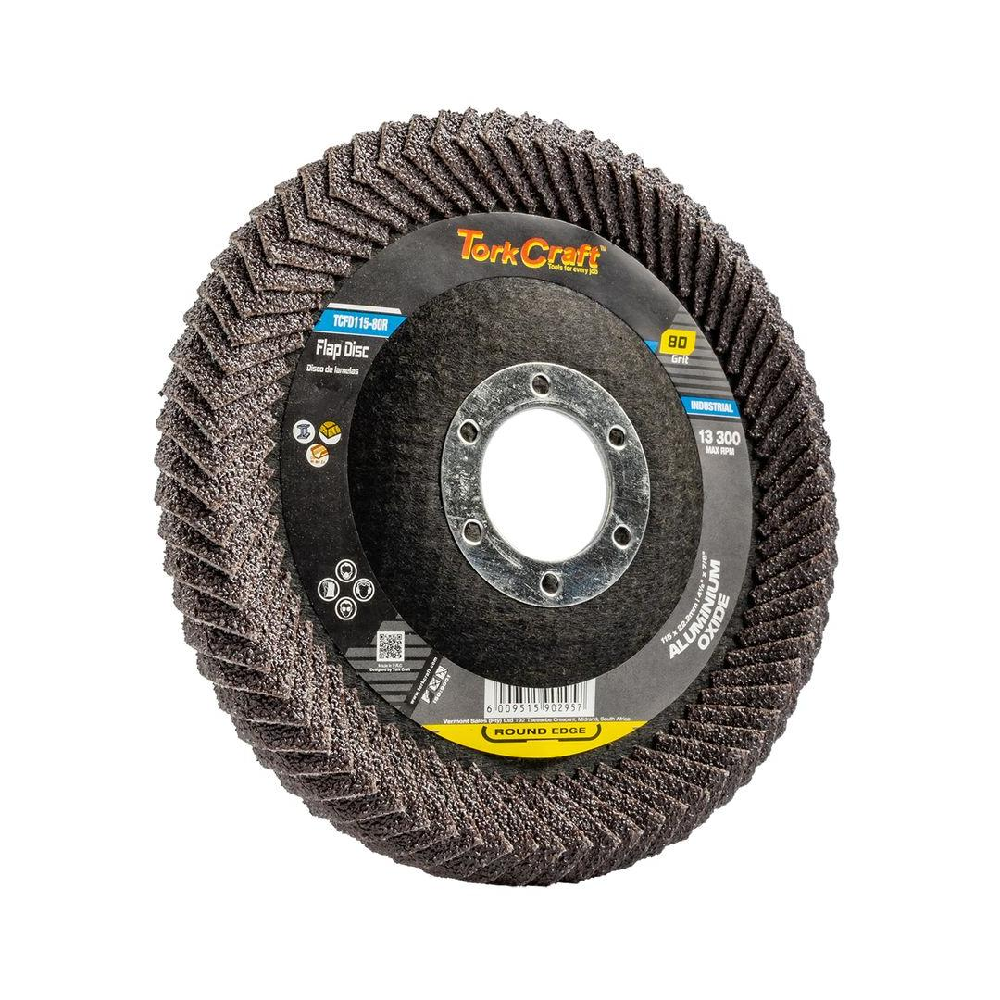

TCFD115-80R
56.81

Grit: 80
Diameter: Ø115mm
Arbor: Ø22.22mm
Max RPM: 13 300
Introducing the Round Edge Flat Flap Disc, a robust and efficient abrasive tool engineered for aggressive material removal and initial surface preparation. This 115mm flat flap disc is distinguished by its unique round edge, which facilitates smooth transitions and helps to avoid marring the workpiece. Loaded with durable 80-grit Aluminum Oxide (A/O) abrasive grains, it offers superior cutting power and a long service life, making it perfect for tackling heavy grinding, rust removal, weld blending, and shaping on a variety of materials including metals, wood, and certain plastics. Experience accelerated productivity and effective stock removal with this high-performance flap disc.
Application: